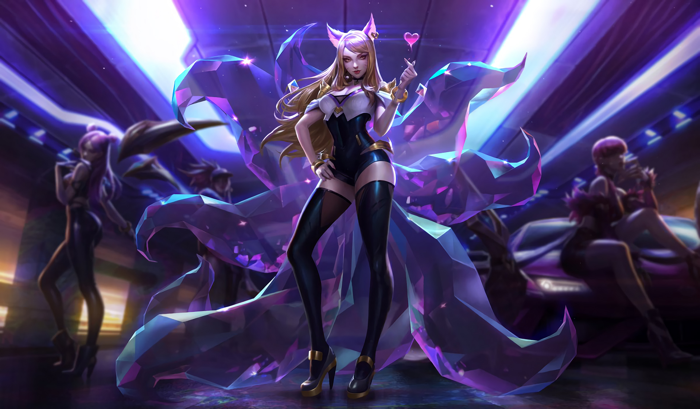
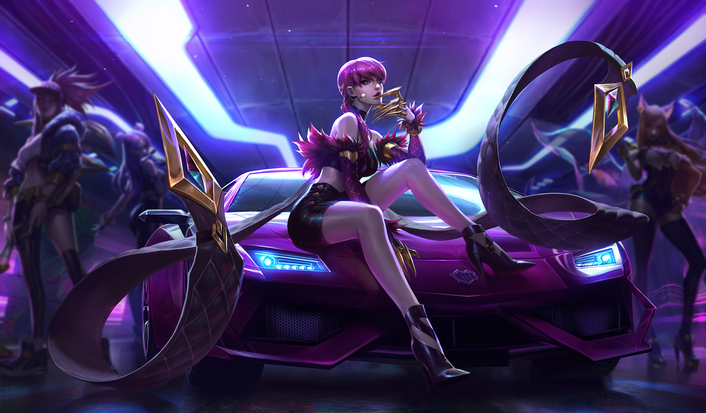
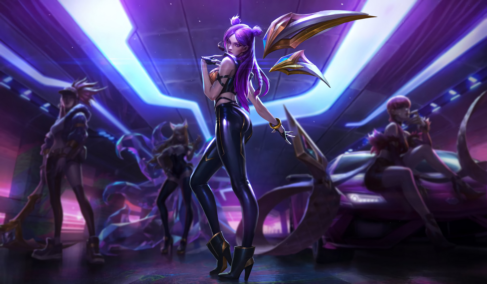
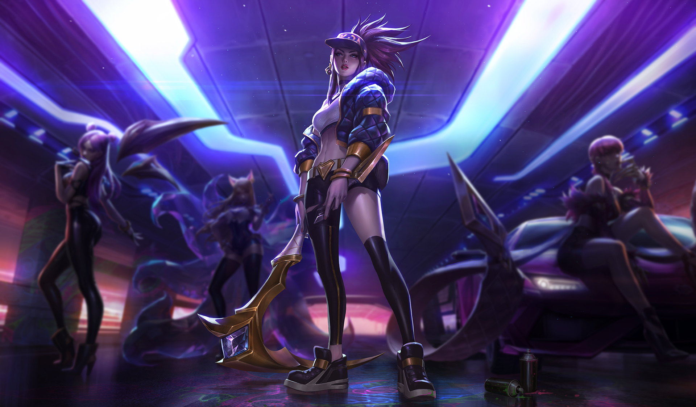

Ahri
Tras alcanzar la fama como estrella pop adolescente, Ahri hizo a un lado su apariencia infantil para revelar su nueva identidad: una hermosa celebridad high-fashion. El nuevo look estilizado de Ahri atrae a los mejores diseñadores de moda. Ahri adorna las fashion week de todo el mundo con los atuendos finales en la pasarela. Ella es el rostro de cosméticos FOXY, y el año pasado lanzó su propia fragancia, Hechizada. Cuando no está con K/DA o entrenando, Ahri sale de compras, bebe té con los diseñadores y prueba nuevos productos de belleza.

Evelynn
Eve tiene una reputación de diva exigente. En una entrevista con Pop Shine declaró: ''Yo soy una artista, no una socialité. No me disculparé por tener estándares altos''. En una ocasión, Eve abandonó el escenario durante una presentación en vivo cuando acompañaron su voz con una pista de audio que ella no había aprobado. A pesar de que su presencia en la industria es turbulenta, tiene una ferviente base de fans que se hacen llamar ''Deeva''. Antes de formar parte de K/DA, Evelynn lanzó dos sencillos exitosos: Agony’s Embrace y Ecstasy.

Kai'Sa
@KDAKaiSa
K/DA_FANSDELMUNDO @KDAFans
@KDAKaiSa, ¿por qué bailas?
KAISAOFICIAL @KDAKaiSa
en respuesta a @KDAFans
Cuando la música comienza, una sinfonía de movimiento despierta en mi interior. Comienza como un estruendo, como si el vacío me invocara, hambriento y exigiendo ser liberado. Mi cuerpo reacciona al llamado, saltando para tejer una historia. Una historia para dejar atrás el vacío y caer hacia los pasos de la vida.

Akali
Akali se presenta junto con otros artistas callejeros en las ciudades que visita. Combinando artes marciales mixtas con el ritmo de sus propias letras, deleita al público con su audaz rap lírico y su estilo de ninja punk. Sus comienzos se remontan a cuando practicaba en las calles antes de llegar a la fama, y regresa a sus raíces siempre que tiene oportunidad de hacerlo. Su cabello rebelde y su estilo indomable la han convertido en una favorita instantánea entre los fans de K/DA.
